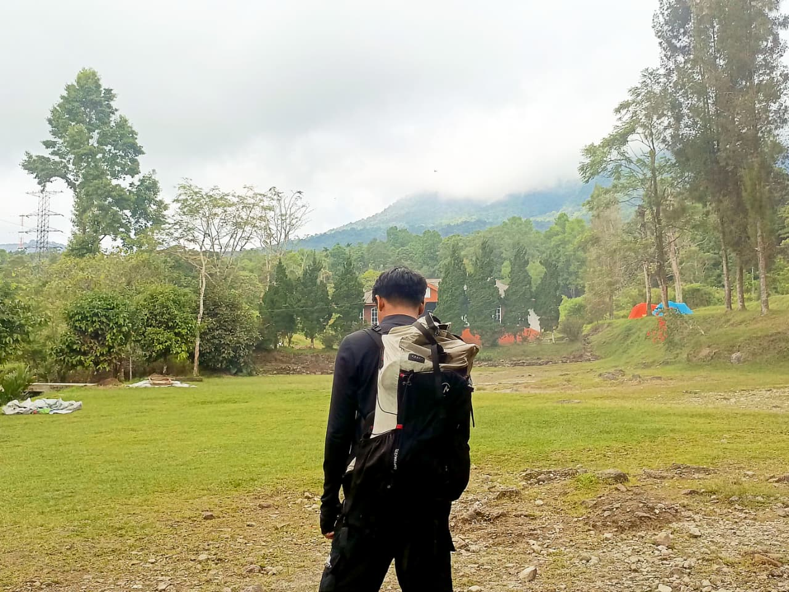
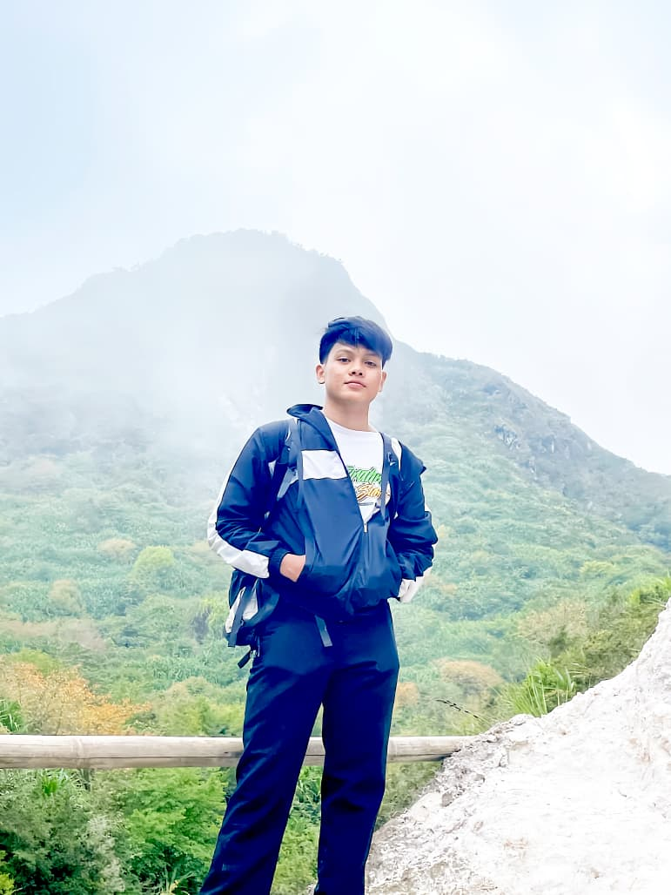
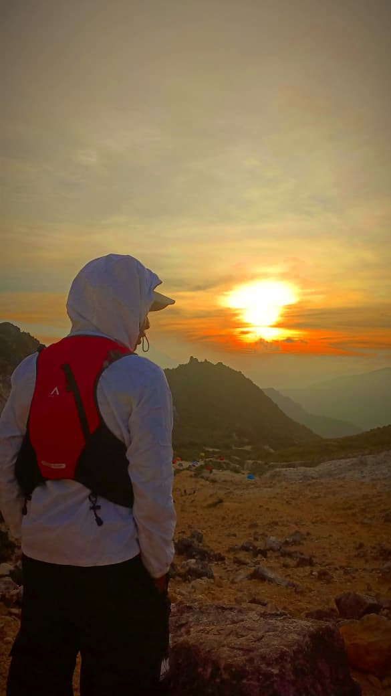
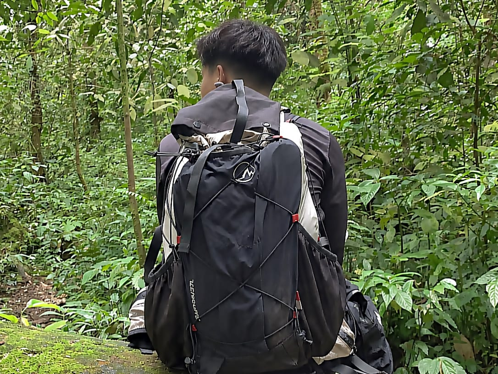
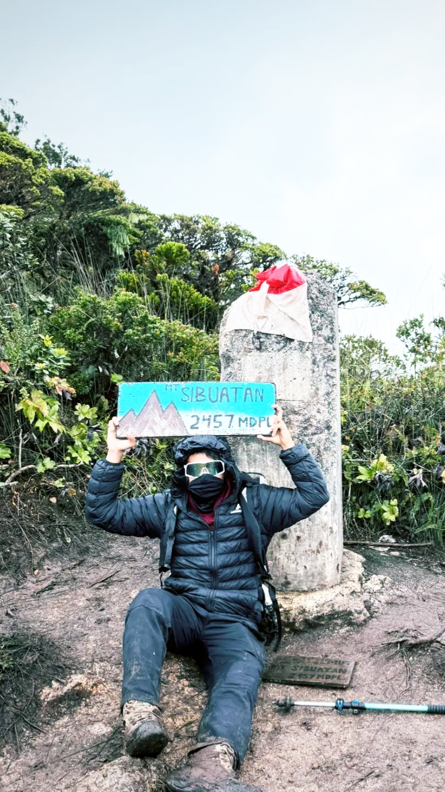
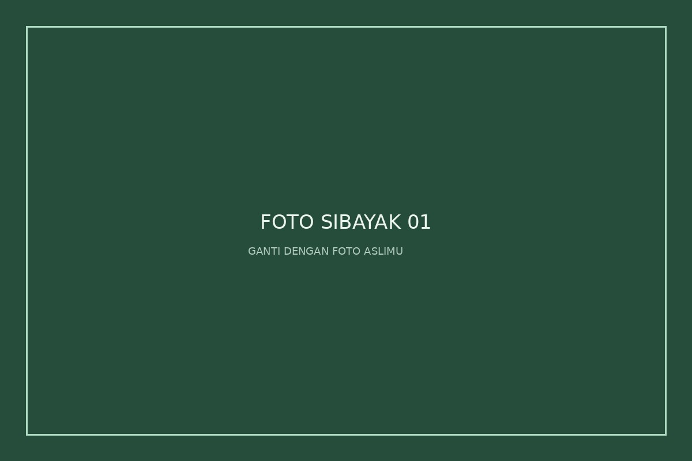
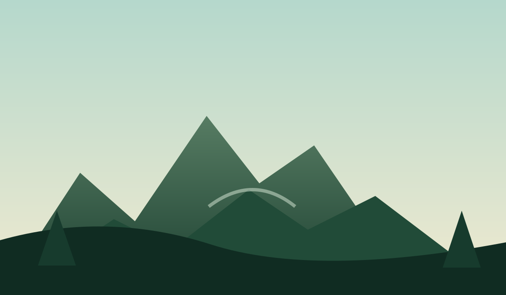
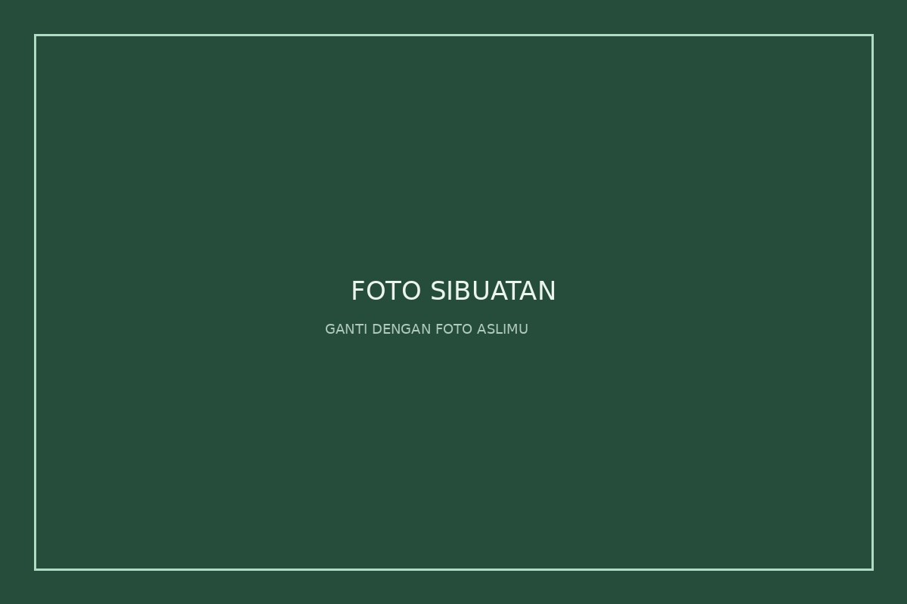
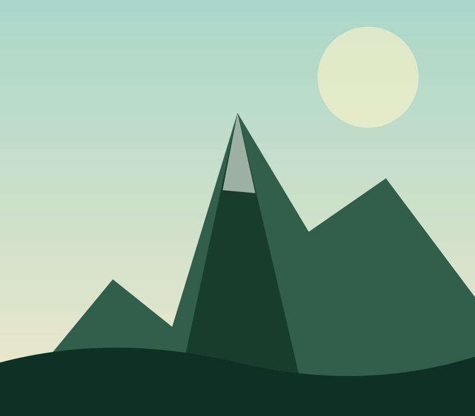
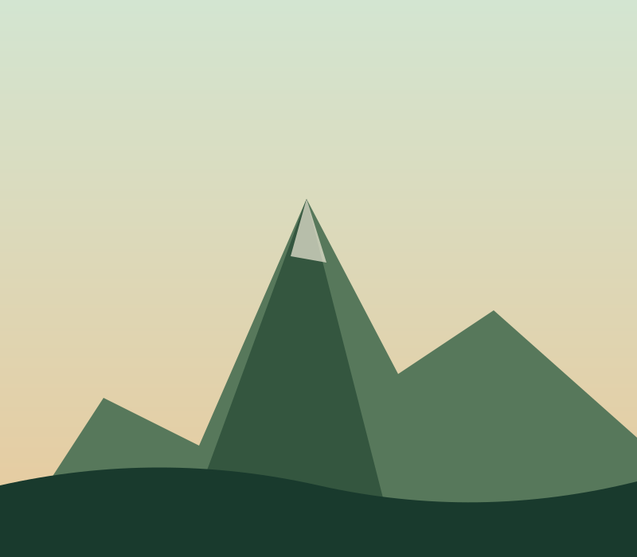

16 : 9
Video Perjalanan Pendakian Gunung Sibayak
01 · Perjalanan
Semua bermula dari rasa penasaran. Dari satu perjalanan, aku mulai menikmati jalur, udara dingin, suara air, dan suasana yang jauh dari ramai.
Setiap tempat meninggalkan cerita. Setiap perjalanan membawa sesuatu yang berbeda ketika aku pulang.





Awalnya aku cuma penasaran seperti apa rasanya pergi ke tempat yang jauh dari suasana kota.
Dari satu perjalanan, aku mulai suka jalur pendakian, suara air, udara dingin, pepohonan, dan momen ketika semuanya terasa lebih tenang.
Website ini menjadi tempat untuk menyimpan cerita itu: tempat yang pernah aku datangi, orang-orang yang ikut dalam perjalanan, foto, video, dan tempat yang masih ingin aku kunjungi.
Mulai dari Air Terjun Dua Warna ↗Air Terjun Dua Warna menjadi salah satu bagian penting dari ceritaku mengenal alam.
Perjalanan ke sini mengajarkan arti kesabaran, kebersamaan, dan menikmati setiap proses.
Keindahan alamnya membuat setiap langkah terasa berarti.
Tempat ini akan selalu menjadi salah satu cerita favorit dalam perjalanan.
03 · GUNUNG SIBAYAK
Perjalanan ini bukan hanya tentang mendaki, tapi juga tentang melihat, merasakan, dan mengingat setiap momen yang ada di sepanjang jalur.

Setiap
langkahnya
selalu punya
cerita.
Serpihan perjalanan dalam bentuk gambar bergerak, lebih dari sekadar foto, ini adalah cerita yang hidup.
♪ Music · Journey
Beberapa momen yang berhasil diabadikan selama perjalanan ke Gunung Sibayak.
04 · GUNUNG SIBUATAN


Sibuatan bukan cuma tentang puncak.
Ada perjalanan bersama kawan, saling menunggu, bercanda di jalur, capek bareng, sampai akhirnya punya satu cerita yang bisa diingat lagi lewat foto dan video.
05 · WISHLIST PERJALANAN

Salah satu tujuan yang ingin aku rasakan sendiri: jalurnya, suasana pegunungannya, dan pemandangan dari ketinggian.

Masuk daftar perjalanan berikutnya. Ingin menikmati jalur terbuka, udara pagi, dan suasana menuju puncak.
Lagu yang menemani perjalanan dan suasana ketika mengingat kembali tempat-tempat yang pernah dikunjungi.
INFO JALAN-JALAN
Kalau membutuhkan open trip untuk perjalanan berikutnya, kamu bisa melihat informasi perjalanan melalui Instagram Mosttrip.